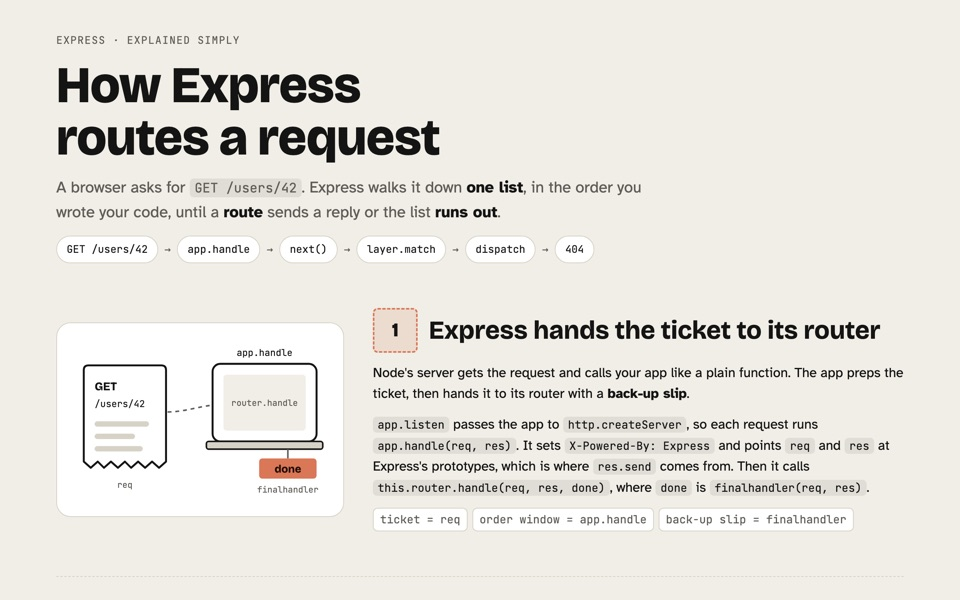
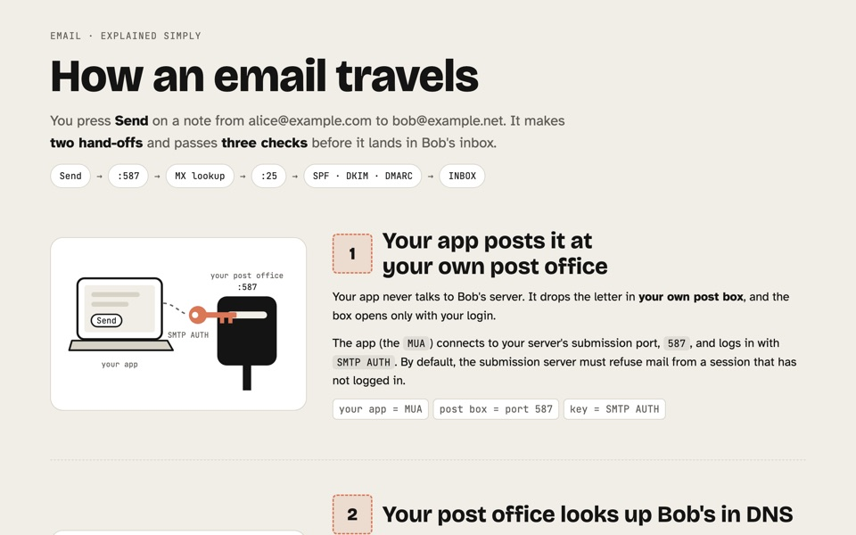
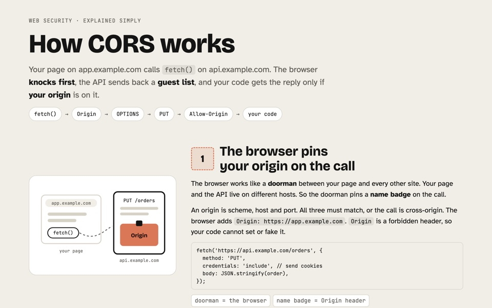
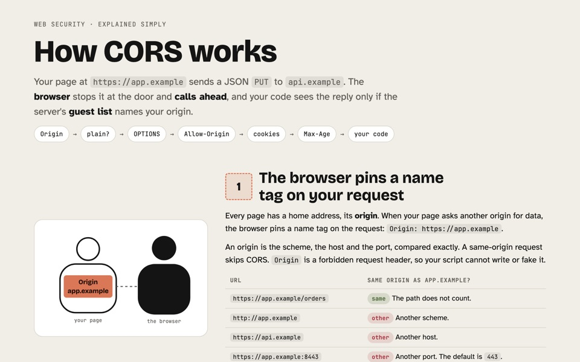
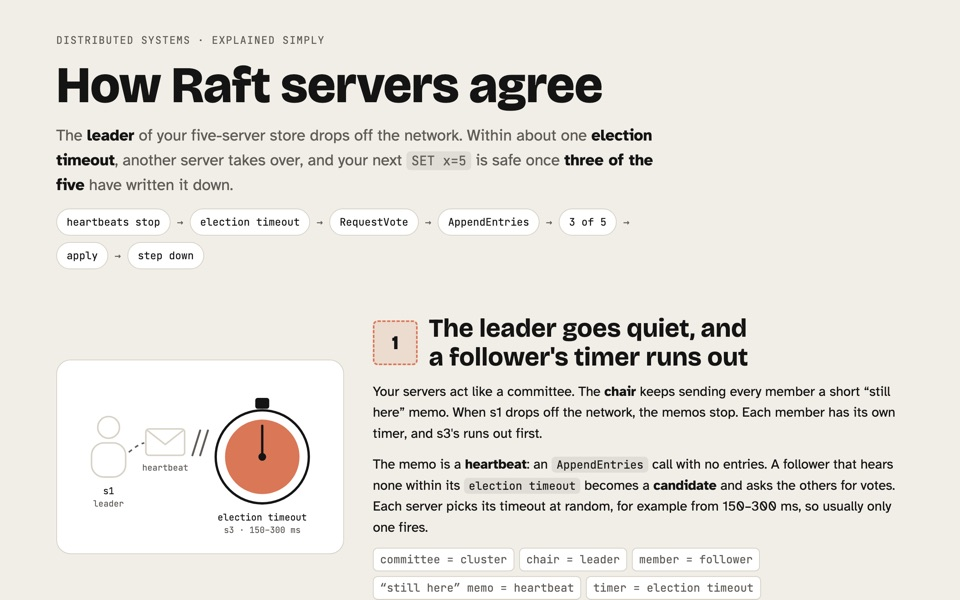
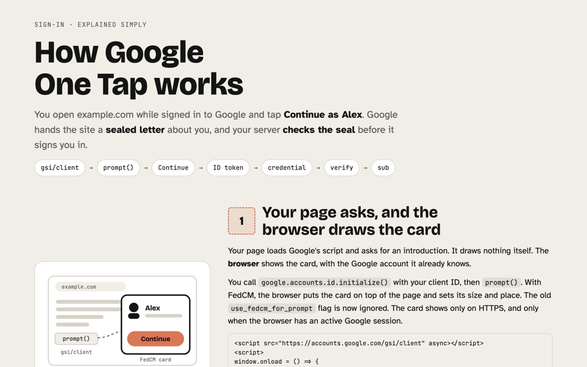
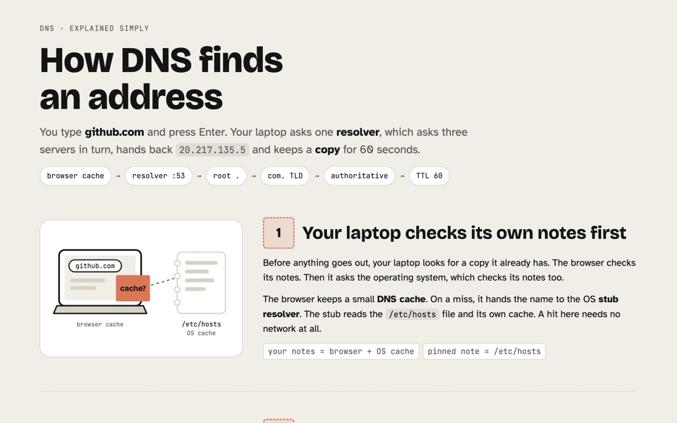

ELI5 for engineers
You're not stupid. You're new to this one topic. Type /kiss and a topic, and get one plain page: the whole route first, then a drawing per step, with the real names.
/plugin marketplace add eranltd/claude-plugins /plugin install kiss@eranltd
Pages it made

How Express routes a request
Traced through Express 5's own source. GET /users/42 walks one list, in the order you wrote your code, until a route replies.

How an email travels
Two hand-offs and three checks, from Send to Bob's inbox.

How CORS works
The browser knocks first and reads the API's guest list.

CORS in depth
Preflights, cookies, the cache and the bare TypeError.

How Raft servers agree
A leader drops off, another takes over, and three of five make a write safe.

How Google One Tap works
Google hands the site a sealed letter. Your server checks the seal.

How DNS finds an address
One resolver asks three servers, then keeps a copy for 60 seconds.
What happens when you type /kiss
You type /kiss and a topic
Give it a topic, a question or a piece of your code. Put simple or deep first to pick how far down it goes.
| Depth | For | You get |
|---|---|---|
simple | new to the field | 3–4 steps, plain words, no code |
| default | new to this topic | 4–6 steps, the real names, short code |
deep | wants the internals | 6–8 steps, failure modes, numbers, code |
It reads before it writes
Name code in your project, and it reads that code first: your files, your functions, your flow. For a general topic, it checks the spec or the official docs.
Then it picks one concrete trace, like GET /users/42, and follows it. No definition up front.
It shows the whole route first
Before any detail, you see every stop in order, on one line. You always know where you are.
One everyday metaphor runs the whole way: a ticket, a guest list, a sealed letter. Where it bends the truth, the page says so.
Then it zooms in, one stop at a time
Each stop gets a stamped step: a big flat drawing on the left, a few plain words on the right, then the real names in code.
One thing in each drawing is orange: the part that decides.
Zoom, don't simplify. Fewer ideas at a time, never wrong ones.
It ends with what to doubt
Every page closes with an honest box: the catch, the questions a sharp reader asks next, what it left out, its sources and anything it could not verify.
A number is measured, sourced or marked as an example. Never invented.
Why not just ask for ELI5?
- ELI5 talks to a five-year-old. It swaps the real names for baby words, so you have nothing to search for later.
/kisskeeps every name. - Pictures carry the load. You recall the page as drawings, so the words can stay few.
- One file, no build. Plain HTML in Claude's palette, light and dark, readable on a phone.
Before you install
- catchIt writes a page, not a chat answer. If your Claude can publish artifacts, you get a link. If not, it saves
kiss-<topic>.htmlin your folder. - ask nextDoes it work on my own code? Yes. Name a file, a route or a flow, and it reads that code first, then uses your names.
- ask nextCan I change the look? Every page starts from one
template.htmlin the skill. Change it, and every new page follows. - sourcesThe whole skill is three files on GitHub:
SKILL.md,template.htmlandexample.html. Free, MIT.